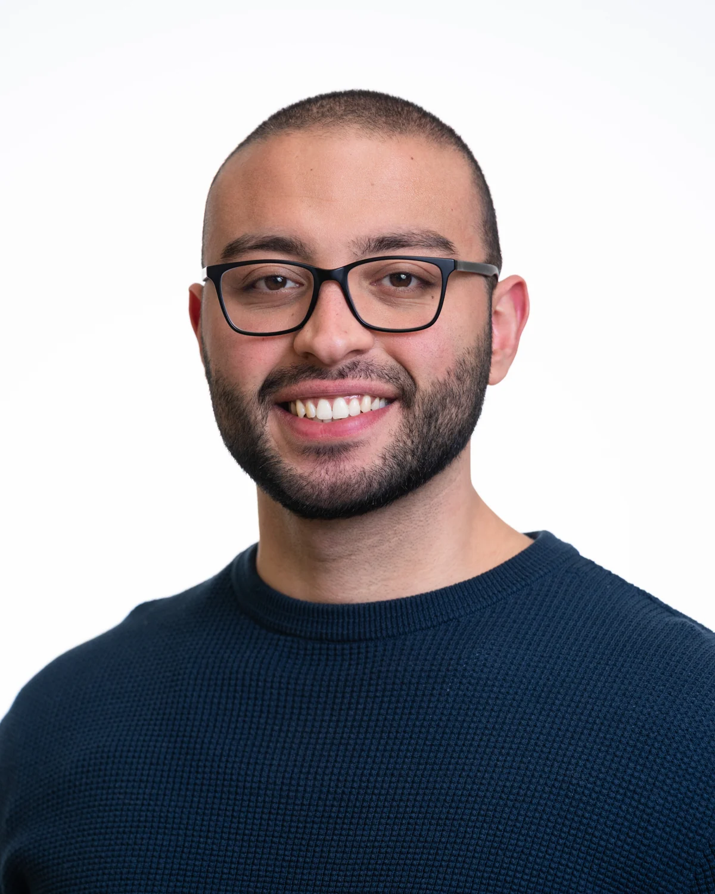

A closer look at the converters, machines, and control systems I’ve designed, modeled, and tested.
FEATURED PROJECT
A SiC inverter. A complete drive.
Connecting wide-bandgap power electronics with OPAL-RT control and real sensor feedback to operate and evaluate electric machines.
40 kHz
Drive switching frequency
4 kVA
Test rig capability
360 V
DC test rig voltage

Yazan Al-Geizawi Electrical engineer & researcher
A LITTLE ABOUT ME
The model matters. So does the bench.
My work sits where electric machines, power electronics, and control meet.
I’m pursuing an M.S. in Electrical & Computer Engineering at Oakland University, with research focused on rare-earth-free synchronous reluctance motors and wide-bandgap power electronics.
I build FEA-derived machine models, develop field-oriented control, and bring those models into OPAL-RT experiments. That work extends to inverter testing, current-sensing PCBs, and evaluating losses across the machine and converter.
2025–2026 · EXPECTED DECEMBER 2026
M.S. Electrical & Computer Engineering
Oakland University · Rochester, MI
4.00 / 4.00 GPA
2020–2025
B.S. Electrical Power & Energy Engineering
Princess Sumaya University for Technology · Amman, Jordan
3.60 / 4.00 GPA · Top 2 in class
TECHNICAL TOOLKIT
Across the system.
Tools and methods I use to move from an electromagnetic model to a working control system.
∿
Simulation & control
MATLAB/Simulink, PLECS, PSIM, LTspice, SIMBA
FOC · SVPWM · dq control · MTPA · PI control · Loss and efficiency analysis
Machines & magnetics
Ansys Maxwell, JMAG
Motor FEA · Flux linkage maps · Torque and back-EMF · Transformer analysis
⌘
Hardware & validation
OPAL-RT OP4610, RT-LAB, KiCad, Arduino, C/C++
Real-time control · PCB design · Sensor feedback · Oscilloscopes · Power analysis
Publications & Research
Investigating what makes drives better.
Research in drive efficiency, PWM, rare-earth-free machines, and physics-informed motor modeling.
Under review & submitted work +
Publication and submission statuses reflect the November 2026 resume. Submitted manuscripts are listed separately from published and presented work.
Power Electronics & Energy Conversion Lab Oakland University · Rochester, MI
Developing FEA-based motor drive models and field-oriented control. Implementing OPAL-RT validation with LEM current and encoder feedback, testing SiC and IGBT inverter hardware, and evaluating system efficiency.
SEP 2025 – PRESENT
Graduate Assistant
Electrical Engineering Department Oakland University · Rochester, MI
Supporting Electronics II, Power Electronics, and Electric Machines. Designing Simulink and LTspice laboratory exercises and revising DC–DC converter experiments with gate-driver circuits.
MAY 2024 – SEP 2024
Electrical Design Engineering Intern
Dar Al-Handasah Amman, Jordan
Produced coordinated electrical layouts in AutoCAD and Revit, single-line diagrams, and panel schedules. Performed feeder and load calculations, breaker sizing, short-circuit checks, and voltage-drop verification.
ADDITIONAL TRAINING
OPAL-RT OP101: RT-LAB & Real-Time Simulation Systems
MathWorks Onramps: MATLAB, Simulink, Stateflow, System Composer & Circuit Simulation
LET’S CONNECT
Let’s talk power electronics.
For engineering opportunities, research conversations, or a closer look at my projects, get in touch.